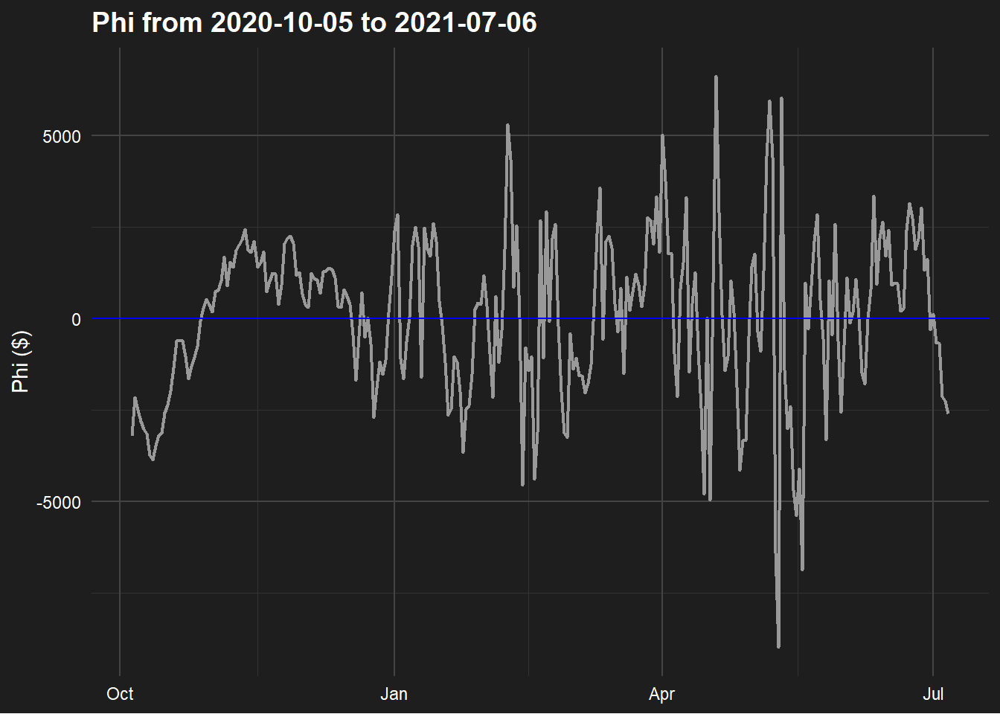

The foundation of this trading strategy is that traders will trade similar securities in a similar fashion. Let’s assume there are only two securities \(S_1\) and \(S_2\). Say \(S_1\) increases by \(10\%\), traders would expect either \(S_1\) to decrease back to its original value, \(S_2\) to increase and meet \(S_1\), or both. This idea can be profited from by shorting \(S_1\) and going long \(S_2\).
The following trading strategy will generalize this idea. By utilizing more securities, the random noise found in our position can be reduced, leading to more consistent returns. The strategy also remain neutral to overall market movements, allowing for returns in any market condition.
Relating \(S_1\) and \(S_2\)
Starting with only two securities, \(S_1\) and \(S_2\), we can construct a formula for \(S_1\) using \(S_2\).
Let \[S_{1,t} = \lambda S_{2,t} + \phi_t\] where \(\lambda, \phi_t \in \mathbb{R}\). \(\lambda\) and \(\phi_t\) can be estimated using a linear regression, assuming \(\phi\) is the error. More securities can be added for lower variance for \(\phi_t\).
How to trade \(\phi\)
Using our \(\lambda\) estimates we have the formula \[S_{1,t} = \lambda_2 S_{2,t} + \lambda_3 S_{3,t}+...+\lambda_n S_{n,t} +\phi_t\] where \(\phi_t\) is the difference between security prices. A portfolio emulating \(\phi_t\)’s price can be found by solving for \(\phi_t\). \[\phi_t = S_{1,t} - \sum_{i=2}^{n} \lambda_i S_{i,t}\] This provides weights for each security to be bought at. Each security \(S_n\) will have \(\lambda_n\) shares bought, negative \(\lambda\) means going short.
Properties of \(\phi\)
Code
library(tidyverse)library(forecast)# Folder containing all your CSVsfolder_path <-"C:/Users/Parker Smith/Desktop/crypto/data 2"# Get a list of all CSV files in the folderfiles <-list.files(folder_path, pattern ="\\.csv$", full.names =TRUE)# Read all CSVs and combine them into one data frameexclude =c('USDT', 'USDC', 'WBTC') # removed any constant or 1-to-1 coinssecurities_data <- files %>%lapply(read.csv) %>%bind_rows() %>%filter(!Symbol %in% exclude)securities_wide <- securities_data %>%select(Symbol, Date, Close) %>%# Keep only relevant columnspivot_wider(names_from = Symbol, # Column names come from the coin symbolvalues_from = Close # Values come from the Close column ) %>%arrange(Date) %>%drop_na()securities_wide$Date =as.Date(securities_wide$Date)n <-nrow(securities_wide)split <-floor(0.8* n) # 80% traintrain <- securities_wide[1:split, ]test <- securities_wide[(split+1):n, ]auto_lm <-function(df, response, alpha =0.05) {# start with all predictors except response and Date predictors <-setdiff(names(df), c(response, "Date")) formula <-as.formula(paste(response, "~", paste(predictors, collapse =" + "), "+ 0")) model <-lm(formula, data = df)repeat { pvals <-summary(model)$coefficients[, 4] # no intercept anymore max_p <-max(pvals, na.rm =TRUE)if (max_p < alpha) break# stop if all are significant worst_var <-names(which.max(pvals)) predictors <-setdiff(predictors, worst_var) formula <-as.formula(paste(response, "~", paste(predictors, collapse =" + "), "+ 0")) model <-lm(formula, data = df) }return(model)}model =auto_lm(securities_wide[ , !(names(securities_wide) %in%"Date")], 'BTC')fit =Arima(model$residuals, order =c(1, 0, 0), include.mean = F)
To examine \(\phi\), data from cryptocurrencies will be used. The data is from 2020-10-05 to 2021-07-06.
Code
theme_dark_mode <-function() {theme_minimal(base_family ="sans") +theme(plot.background =element_rect(fill ="#1e1e1e", color =NA),panel.background =element_rect(fill ="#1e1e1e", color =NA),panel.grid.major =element_line(color ="#444444"),panel.grid.minor =element_line(color ="#333333"),axis.text =element_text(color ="white"),axis.title =element_text(color ="white"),plot.title =element_text(color ="white", face ="bold", size =14),plot.subtitle =element_text(color ="white", size =12),legend.background =element_rect(fill ="#1e1e1e", color =NA),legend.text =element_text(color ="white"),legend.title =element_text(color ="white", face ="bold") )}phi =data.frame(phi = model$residuals,Date = securities_wide$Date)ggplot(phi, aes(y=phi, x=Date)) +geom_line(color="#999999", linewidth=.75) +geom_hline(yintercept =0, color='blue') +theme_dark_mode() +labs(title ="Phi from 2020-10-05 to 2021-07-06",y ="Phi ($)",x =NULL )

Unlike a usual regression error \(\epsilon\), \(\phi_t\) seems to be dependent on \(\phi_{t-1}\). Since we are assuming that prices will converge, \(\phi\) should be pulled toward \(0\). This would imply a Auto Regressive (AR) model. After testing the AR(1) model provided the best AIC, avoiding over fitting. This gives a new equation for \(\phi_t\):
\[
\phi_t = \lambda \phi_{t-1} + \sigma z_t \quad \; \lambda, \sigma \in \mathbb{R}
\] where \(z_t\) is a standard normal variable.